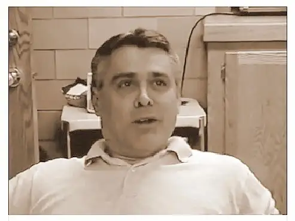

I remember seeing the six-pack of Tab soda in the kitchen the first day of school this year. My oldest daughter, a junior at Shanley High School, was on a mission. She’d purchased the once-popular pop for one of her teachers, and was now intent on presenting it to him at school the next day.
{kind=link}
“Someone still drinks Tab?” I thought, suddenly hearing the old Tab commercial from my childhood in my head. And yet I couldn’t help but admire whomever this was from the get go. Anyone who could keep this old drink alive and convince his students, the first day of school even, to keep his stock replenished must have a great sense of humor or be quite clever, and probably both.
Due to family logistics, I didn’t go to my daughters’ high school conferences this past fall, so I didn’t have a chance to meet Mr. Randall Rustad, the history teacher “O” has come to adore. Oh I would hear the stories, and sometimes, in my mind, even get him mixed up with his son — the younger Mr. Rustad, also a teacher at our school.
 |
| The elder Mr. Rustad in earlier years at Shanley High School |
{kind=link}
But in time, I would sort it out, by necessity and some urgency.
Last Saturday, while in D.C. for the March for Life, we received some disconcerting news from our high school principal back home.
“Randall Rustad had a heart attack early this morning. He has since had a stint put in to remove blockage in his major artery. He is doing better but the doctor said he is not out of the woods. We will share additional information as we can.”
We were on the bus at the time, on the way to visit the Basilica of the National Shrine of the Immaculate Conception, and immediately, we went into prayer mode, dedicating a Rosary for the teacher who had made it through but was in fragile condition.
Shortly after arriving at the basilica, one of the other chaperones who works at the school pulled me aside. She’d left her camera on the bus but wanted to know if I could take a photo with mine in the chapel dedicated to JPII, our school’s patron saint, and include in it the candle that had just been lit in honor of Mr. Rustad. She wanted everyone back home to know we were storming the heavens from our post in D.C. for this beloved man.
{kind=link}
After we returned to Fargo, I learned that my oldest daughter, who’d stayed back to work and help out at home, had been doing a service project with Mr. Rustad on Friday, just a day before his heart attack. Suddenly, that time she’d spent in his care and guidance with the other students seemed all the more precious.
And so the prayers continued. Then, Thursday night, reports started coming in through social media that Mr. Rustad, having taken a turn for the worst, had passed. I looked for confirmation online, but found none. Our hope was to visit Mr. Rustad Friday morning since my daughter dearly wanted to see him. The next morning, reports continued to be conflicting. A local news station had even reported his death, and yet nothing had come in from the school. Finally, a friend called the hospital and learned he was still with us. What a beautiful moment it was for us to realize that we might get a chance to pay a visit to Mr. Rustad after all. This moment of second chances before me, I cleared my afternoon schedule to bring my daughter and her friend to the hospital, where the family was gladly accepting visitors.
They lovingly welcomed us, and we stayed for about 30 minutes, my daughter, her friend and I, listening to their stories, watching them stroke his arm and say what needed saying, opening and reading the colorful cards that had been pouring in from his students. It brought me back two years to Jan. 2013, when I was the daughter near my gravely-ill father’s side.
What might have been an excruciatingly difficult scene was, instead, a picture of faith and the love of family. Yes, there was the recognition that death was likely near. But also the realization that each moment more was a gift. The family’s willingness to welcome us into that sacred space spoke of generosity and, again, of a faith in God deep enough to include others who had loved their father, husband, brother. When we left, my daughter’s friend thanked me for bringing her, and both said they were grateful we’d gone.
Saturday, we received the news that this dear soul had been transferred to his home, and early that morning, passed through to the other side of the veil. Our school chaplain sent out a note that he’d be saying a Mass at the chapel for anyone who wanted to come and pray for Mr. Rustad’s soul and his family.
As we turned into the parking lot just before 5 p.m., the school marquee loomed large and sweet.
{kind=link}
I can’t think of any better words to demonstrate the kids’ love for this man, who was the center of many pranks through the years, but who seemed a very willing participant…
Rustad Prank at Shanley, 2012 (WDAY story)
A teller of ghost stories, especially at the old Shanley building in North Fargo, which was replete with sightings of ghostly beings….
(Hear Mr. Rustad’s account of ghost sightings at old Shanley.)
And who found ways of making sure his supply of an outdated diet cola was kept fresh and flowing.
Just this fall, he was interviewed by our friend, Scott Hennen, on his radio show.
Radio interview with Scott Hennen, Aug. 21, 2014
The Tab he mentions at the beginning of the interview? The same Tab my daughter helped supply.
Also Saturday morning, I read a Caringbridge update on someone else for whom we had prayed on our pilgrimage to D.C., Michelle Duppong, a young woman from western North Dakota battling stage 4 colon cancer. Her sister wrote the following in her update after having paid visits to two ailing friends:
“When Shell and I were leaving the hospital, something struck me. I turned to her and said, “Do you realize that we just visited Jesus twice? I mean, Jesus said, “When I was sick you visited me.” …I’m sure that many of the people who’ve visited Shell during her hospital stays didn’t realize that they were making a “mini-pilgrimage”– they’ve gone out of their way to do an act of charity. And Christ tells us that whatever we do unto others, both good and bad things, we do unto Him. How beautiful! That must be why I felt joy inside me after leaving both Annette and aunt Donna’s rooms despite the circumstances. I had just visited Christ.”
As we were leaving the hospital room Friday, I slipped over to Mr. Rustad’s side and made the sign of the cross on his beautiful forehead. I can’t imagine how hard it was for my daughter to see him in that unresponsive state, but because of my experience this year with the study, “Consoling the Heart of Jesus,” I was able to see Jesus in Mr. Rustad, as Renae had described, and had the same awareness that in visiting that hospital room, I’d just visited Jesus. What a privilege.
My crossing with Mr. Rustad came too late, and yet…I have come to know him even so. Not through a parent-teacher conference, but through the tears in my daughter’s eyes. As hard as that is, how blessed I am for it. For her tears tell me that someone mattered to her a great deal. Someone who, when I wasn’t around, had made her laugh and live more than she might have otherwise. And that… makes Mr. Rustad my hero.
May the perpetual light shine upon you, dear RRR. Thank you for sharing your life with my daughter. She was one of the last students in your charge, and we will be eternally grateful for that last vibrant day of yours on the earth. Enjoy your new home, but — and I mean this in all seriousness — please save some Tab for us!